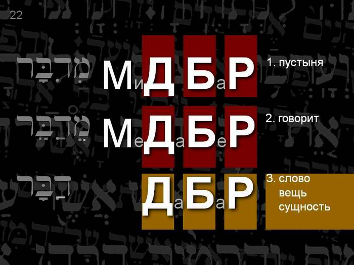

God Speaks in the Wilderness
For forty years Israel wandered in the wilderness. What was it? A forty-year punishment? Or a blessing? Turning to the original text (in Hebrew) helps to find the answer.
"The voice of him that crieth in the wilderness (KOL KORE BA-MIDBAR), Prepare ye the way of the LORD, make straight in the desert a highway for our God" (Isa. 40:3), and (John 1:23): "He said, I am the voice of one crying in the wilderness, Make straight the way of the Lord, as said the prophet Esaias."
"Thus saith the LORD God of Israel, Let my people go, that they may hold a feast unto me in the wilderness."
Exod. 5:1
כֹּה־אָמַר יְהוָה אֱלֹהֵי יִשְׂרָאֵל שַׁלַּח אֶת־עַמִּי וְיָחֹגּוּ לִי בַּמִּדְבָּר׃
"VE-YACHOGU LI BA-MIDBAR…" (Hebrew: that they may hold a feast unto me). He set us free so that we might rejoice and celebrate before Him. Celebration is the highest level of holy service, when the people, as one man, with one heart, celebrate in purity and harmony.
It is interesting that it was no accident that Israel found itself in the wilderness after leaving Egypt. And it is no accident that all the Jewish feasts are closely connected with the wilderness.
At first sight this is rather strange. After all, the wilderness is not the best place to live. But the wilderness is the most fitting place to pray to God for rain, for living water…
God pursues a definite purpose when He draws His people into the wilderness. The state of "wilderness" is a blessed state. He sees the state of "wilderness" as a condition for celebration (compare "Blessed are the poor in spirit: for theirs is the kingdom of heaven", Matt. 5:3).
That is why Yaakov (James) says: "My brethren, count it all joy when ye fall into divers temptations; knowing this, that the trying of your faith worketh patience" (James 1:2–3). That is, he speaks of an especially close relationship with God.

So why did the Creator choose the wilderness in particular? The translation of the word "wilderness" from Hebrew explains a great deal. In other languages the idea of "wilderness" or "desert" points first of all to emptiness, to the absence of comfort, people and life… In Hebrew it is different:
מדבר: 1. wilderness (MIDBAR); 2. mouth; 3. (he) speaks (MEDABER).
מִדְבָּר (H4057): 1. wilderness; 2. mouth.
דִּבֵּר (H1696): to speak, say, talk, converse.
דָּבָר (H1697): 1. word, saying; 2. thing, matter.
"Therefore, behold, I will allure her, and bring her into the wilderness (הַמִּדְבָּר), and speak (וְדִבַּרְתִּי) to her heart. And I will give her her vineyards from thence (from the wilderness), and the valley of Achor for a door of hope: and she shall sing there, as in the days of her youth, and as in the day when she came up out of the land of Egypt."
Hos. 2:14–15
The root of the word "to speak", and also of "wilderness", is DAVAR, which means "word" and also "thing", "essence". Once in the wilderness, a person's essence very soon shows itself, is revealed (becomes tangible): what he is inside comes out…
God says to His people: "SHEMA! Hear, O Israel!"
Each of us has times of wilderness in our lives and faces the need to cross the sea. But there are special times, appointed by the Creator of the universe Himself, when He expects a very important spiritual act from us: to celebrate this before Him in harmony, all together, turning in our minds to the wilderness and passing through the Red Sea. He longs to speak to us…
The priestly blessing (the Aaronic blessing) (Num. 6:22–27), proclaimed at the feast:
Author: Ephraim Kalish / Torah-Art
 Obeying the Commandment of Shofar Blowing
Obeying the Commandment of Shofar Blowing Hearing the Voice of the Shofar: the Film "Shofar Experience"
Hearing the Voice of the Shofar: the Film "Shofar Experience" The Shofar: One of a Kind!
The Shofar: One of a Kind!